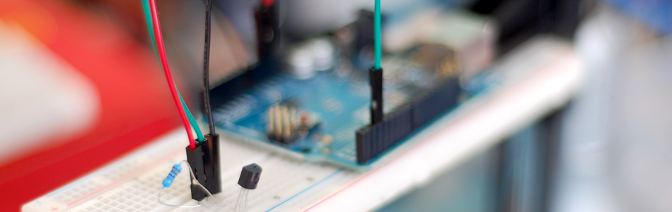

One Wire Digital Temperature. DS18B20 + Arduino

For this tutorial we will be using just one of them, and our code will only support the one. So if you need to read from a few or a lot of these, contact us in the forum and we can help you out. There is also a good amount of code out there for using a bunch of these at once, but no examples of just the one.
Hooking it up
This is by far one of the more simple digital sensors to hookup. Aside from power and ground, it has a single digital signal pin that we will be connecting to digital pin 2 on our arduino. It also requires a 4.7k pull-up resistor between the signal and power pin as shown in the illustration. (I tried the internal pull-ups on the arduino but it did not work)
There is a way this sensor can be hooked up with just 2 wires (no power), but it slows the code down, so I decided not to go that way.

Code
The code on the official Arduino site was overly complex and didn't even return a number value at the end. This is much simpler, but only supports a single sensor on the bus as it is. Again, if you need more, ask us in the comments. This code will simply print a decimal value of the temperature in degrees Celsius to the serial terminal.
To make this code work, before you load the code, or even open the Arduino program, we need to place the “OneWire” folder into your Arduino Library. If you don’t know where that is by default, Look to the right.
If you click the download button to the right of “Arduino” you can download the whole thing as a zip, so you dont need to copy all the files.
Default Library Folder Location
On your Mac:: In (home directory)/Documents/Arduino/libraries
On your PC:: My Documents -> Arduino -> libraries
On your Linux box:: (home directory)/sketchbook/libraries
Article taken from bildr.org with minor changes - I am the original author of this content